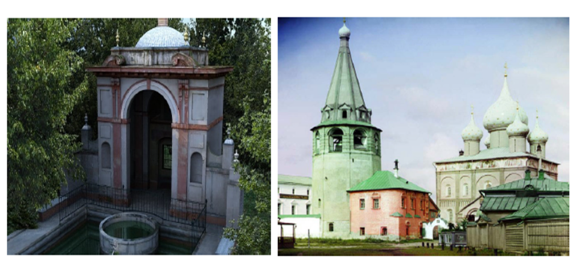
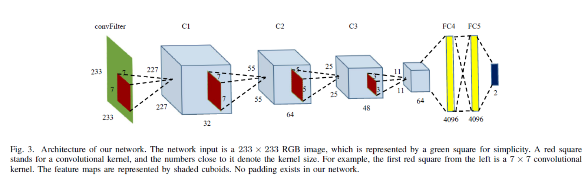

|
Distinguishing Computer-Generated Images from Natural Images Using Channel and Pixel Correlation
|
|
Ruisong Zhang 1,2
Weize Quan 1,2
Lubin Fan 3
Liming Hu 4
Dong-Ming Yan 1,2
1 National Laboratory of Pattern Recognition, Institute of Automation, Chinese Academy of Sciences 2 School of Artificial Intelligence, University of Chinese Academy of Sciences 3 Alibaba Group 4 State Key Laboratory of Hydro-Science and Engineering, Tsinghua University |
|

A pairs of images about architecture. Computer-generated images are on the left side, and nature images are on the right side. These images are from the SPL2018 dataset. |
|

Architecture of our network ScNet and the hybrid correlation module. The network input is a 96 × 96 image patch, and output is the label (NI or CG). Each convolutional layer shows the kernel size and the number of feature maps, e.g., “3 × 3 Conv 32” means the kernel size is 3 × 3 and the number of output channels is 32. |
Abstract
Experimental Results


The left figure is the training loss of the ScNet and three corresponding variants. The training loss quickly decreases in the first 600 epochs and the network reaches the stability after about 1,000 epochs. The right figure shows the classification accuracies of the ScNet and three corresponding variants on the validation set. Among four networks, our proposed ScNet achieves the best performance. |


The left figure visualizes feature maps on 1 × 1 convolutional layer of three parallel Conv1 modules. The first row is a natural image, and the second row is a computer-generated image. For the natural image, the words (red block of the first row) becomes more and more obscure from left to right. However, the words in the computer-generated image (red block of the second row) are sharp for three feature maps. The right figure shows the color mapping image of weights of each 1 × 1 convolutional kernel of ScNet trained on three random splits. The weights of the three Conv1 modules of each random split are roughly arranged in (+, 0, -), with no fixed order, which is similar to the idea of the input differential image. In addition, the absolute value of the three convolutional kernel weights is in three orders of magnitude. |
Bibtex
Download
|
Paper [PDF] Code [Github] |